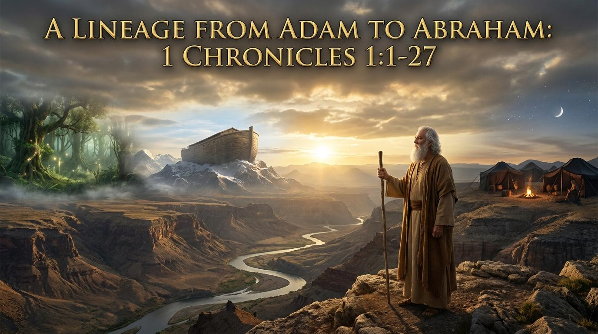

開路者的禱告
「永在的父神，當我們翻開這卷看似枯燥的家譜時，求聖靈開我們的屬靈眼睛，讓我們看見這不只是一串冰冷的名字，而是祢在人類歷史中步步引導、掌權與揀選的恩典軌跡。主啊，在這浩瀚的歷史洪流中，祢不僅認識每一位先祖，祢也按著我們的名字呼召了我們。求祢藉著今天的經文，堅固我們的信心，讓我們知道自己的生命也正被編織在祢偉大的救贖計畫之中。奉主耶穌基督的聖名禱告，阿們。」

（歷代志上 1:27）
「永在的父神，當我們翻開這卷看似枯燥的家譜時，求聖靈開我們的屬靈眼睛，讓我們看見這不只是一串冰冷的名字，而是祢在人類歷史中步步引導、掌權與揀選的恩典軌跡。主啊，在這浩瀚的歷史洪流中，祢不僅認識每一位先祖，祢也按著我們的名字呼召了我們。求祢藉著今天的經文，堅固我們的信心，讓我們知道自己的生命也正被編織在祢偉大的救贖計畫之中。奉主耶穌基督的聖名禱告，阿們。」